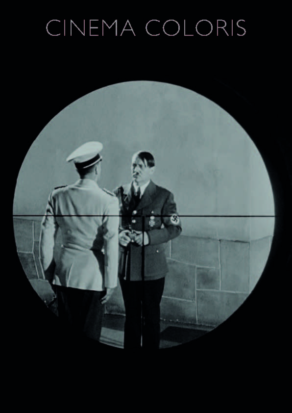

Con la llegada del nazismo al poder en la Alemania de los años 30, al igual que tantos otros profesionales del cine, Fritz Lang se trasladó a Hollywood. Pocos años después, ya con la guerra en marcha, dirigiría Man Hunt (1941), la cual sería la primera parte de una tetralogía de películas en contra del nazismo. Es ineludible ver el carácter propagandístico de la obra, estrenada meses antes del ataque a Pearl Harbor y posterior entrada de los EEUU en la contienda, el cual llevaba tiempo concienciando a su población y buscando el momento idóneo para involucrarse. Desde el inicio mismo de la película se hace apología del magnicidio, encuadrando al Führer en un plano subjetivo a través de la mirilla de un fusil, mostrándolo como el enemigo a abatir.
Al inicio, tras ser arrestado, el protagonista, un militar inglés, es llevado frente a un oficial alemán. Esta secuencia, la más rica del film a nivel analítico, está marcada por el uso de ciertos objetos con una fuerte carga simbólica, donde la puesta en escena no deja nada al azar. Cuando el prisionero entra en la sala se le encuadra con un plano de cuerpo entero, a los lados del cuadro se sitúan a un lado la figura de un águila, y al otro un globo terráqueo (a una altura ligeramente más baja) para generar una idea de dominio y acecho insaciable. Por su parte, el alemán, retratado con un plano ligeramente más cerrado, se muestra con la figura de San Sebastián acribillado a flechas detrás a un lado del cuadro, representando el sacrificio y penitencia de un mártir. Paradójicamente, los elementos que acompañan a los personajes en sus correspondientes planos, definen la naturaleza de su oponente. Otro elemento que comparten ambos planos, es la presencia del tablero de ajedrez en la parte inferior del mismo, representando la rivalidad entre los dos. El oficial nazi, con un ademán de falsa generosidad le ofrece asiento, de esta manera se presenta más alto en relación. Cuando Thorndike, el protagonista, se defiende de las acusaciones diciendo en tono burlesco que solo estaba practicando la caza deportiva, su correspondiente plano en el plano contraplano se transforma en un plano general de la estancia, donde dos elementos generan una sinergia sobre la idea de juego que propone el inglés. Al fondo, el anteriormente mencionado ajedrez, representa la parte intelectual del juego. En primer término, representando la parte física, la figura de una cuadriga romana, anticipa también el acecho que sufre y sufrirá el personaje el resto del film (está encarada hacia él). Esta estampa se reproducirá poco después, cambiando perros por caballos, cuando haga una batida para buscar su supuesto cadáver, pero al igual que San Sebastián, sobrevivió.
Un tema a destacar es el fuerte subtexto sexual y fálico, con sus correspondientes complejos y significados desde un marco de poder. Durante el interrogatorio inicial, ambos personajes son relacionados cada uno con un arma, Thorndike, con el rifle que le incautaron, el cual observa detenidamente el oficial nazi con cierta admiración y envidia antes de la llegada del reo a la sala. El oficial, por su parte, se muestra vinculado a su pequeño sable que lleva colgado del cinturón, y que en ocasiones, al ponerse de perfil, se muestra la empuñadura apuntando hacia arriba mostrando una pequeña erección metafórica al sentirse poderoso sobre la situación. Cuando Thorndike entra en la estancia, ambos son enmarcados y enfrentados en planos equivalentes previamente analizados, no obstante, se da una diferencia, ambos tienen sillas delante, mientras la del protagonista está desplazada a un lado sin cubrirle nada, el alemán se esconde detrás de la suya, poniendo incluso las manos encima. Este hecho muestra la entereza de uno y los complejos de inferioridad del otro. Tras ser torturado el protagonista, es llevado de nuevo frente al oficial. Sobre la alfombra se proyecta la sombra de la cabeza de un derrotado Thorndike, la cual se sitúa en frente de la cintura de su oponente, específicamente frente a la empuñadura de su sable. El alemán le intenta coaccionar para que acepte un pacto desfavorable, a nivel subtextual se podría leer como que le fuerza para que le realice una felación. Tras negarse Thorndike, el oficial nazi se desplaza alejándose unos metros, ahora lo que se alinea junto con la cabeza del reo son los pies, le aplasta, la sentencia por haberle despreciado ya está dictada. No es descabellado pensar que esta interpretación es totalmente plausible si se piensa por una parte, que Lang proviene del cine mudo, donde las imágenes deben narrarlo todo en detrimento del diálogo, afectando a lo explícito e implícito. Y por otra parte y más destacable, siendo coetáneo de Sigmund Freud y su teoría del psicoanálisis, resulta imposible pensar que no fuera como mínimo conocedor de la misma.
La relación del protagonista con Jerry, la chica que le acoge, podría estar marcada por una posible homosexualidad de él. Esto se podría deducir por un lado por la barrera emocional que se construye entre ambos personajes, donde el deseo es unidireccional. Un plano que define su relación se produce cuando están en el despacho de un amigo de él. Se muestra un plano general de la estancia donde aparecen los tres, mediante un acercamiento con travelling el plano se cierra sobre ellos dos, ignorándola a ella (Thorndike evita que se involucre para evitarle daño). La cámara panea hacia la derecha mostrándola a ella sola (mientras hablan sobre el pago que recibirá a modo de agradecimiento), busca desvincularla. Ella lo rechaza, se levanta, y va hacia ellos, la cámara panea hacia la izquierda siguiéndola, quiere ser parte de su vida aceptando las consecuencias. Además, son frecuentes los planos en los que ambos están encuadrados y él se sale, dejándola a ella sola (por ejemplo, la despedida en el metro). Resulta ciertamente extraño dentro del cine clásico, tan dado al romance y al momento climático del beso, donde aquí se ve frustrado. Por otro lado, la simbólica personificación de San Sebastián en Thorndike daría otra pista. Pese a que originalmente este santo ni pecó de sodomita ni tenía ninguna vinculación con lo homosexual, se lo apropiaron y se sintieron identificados con él de alguna manera diversos homosexuales, entre ellos, reconocidos escritores como Oscar Wilde, Federico García Lorca o Yukio Mishima.